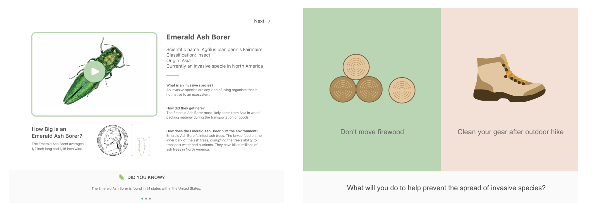
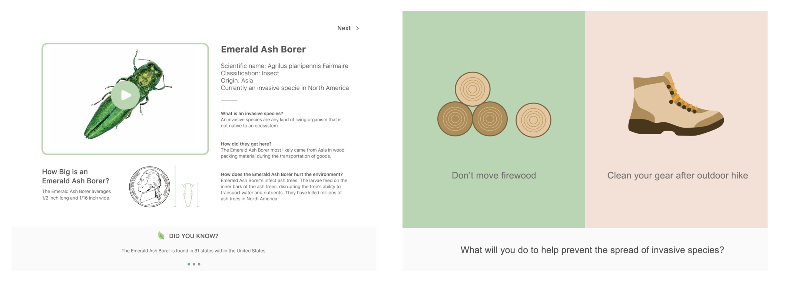

Challenge
Problem Statement
How do we design a system that provides engaging activities for families to experience dioramas in a new way?
Key Insights
We observed that there was a limited parent to child engagement in the diorama section at the museum. Through our research and interview, we found that:
Parents and children moved at different speeds throughout the exhibition.
Lack of more in-depth conversation about artifacts and further learning engagement
Need to increase amount of information and activities provided through the use of technology
Design Principles & Implementations
Based on observations and discussions with museum staff and elementary school educators, we decided to focus on 5-11 years old children and their parents to utilize:
Incorporate the concept of human impacts inside the ecosystems presented by the dioramas
Observation and inquiry to promote conversation
Use open-ended questions to provide opportunities for in-depth learning and engagement
Provide a variety of entry points for different types of learners
Use role-playing to further engage children with the diorama environments
Process
Primary Research
We applied five research methods in our primary research: interviews, expert interviews, contextual inquiry, shadowing and fly-on-the-wall. We conducted 18 families interviews when we were in the museum context. We asked child and parent separately around questions such as:
What did you find interesting in the museum?
Was there any exhibit that was hard to understand from the information provided?
What do you wish your child gets out of visiting the museum today?
Did you do anything to engage your children while going through the exhibits?
Expert Interviews
We had the opportunity to speak with museum staff who worked in the Education Department. These interviews provided us insight into some of the museum's desires and concerns, such as the importance to preserve the tradition of dioramas and the desire to incorporate the concept of Anthropocene throughout other exhibitions on display at the museum. We also had the opportunity to speak with an elementary school educator to gain a better understanding of the learning process and techniques that are utilized in engaging young children.
Design concept Iteration
We started with a very broad idea of educating children about climate change about human impacts. However, there are too many factors to this idea. Then we iterated our concept to macro Impacts vs. micro Impacts about time. Implementing time element to the design somehow scope down our concept to specific human impacts to the ecosystem. Through our research, we found that invasive species is one of the primary human impacts that influence the ecosystem in animal's habitats. The activity allows the children to control timeline to observe how invasive species affect the environment over time and plege to help for improving the environment.
Journey Overview
Dioramas Entry Center
The users first arrive at the center station. Here they are able to select the dioramas they would like to visit and receive the items they will need to complete Wildlife Adventure. They are introduced to Ranger Joe, Wildlife Adventure's mascot, and given basic instructions by a stationed museum employee.
At first, we were targeting toward children around 5-8 years old. Our visual style and languages lean to more toddler understanding approach. As we decided to involve parents participating in the activities, our approach shifted to somewhat in between that both parents and children could understand. When we were planning our wireframes, we also got feedbacks from elementary school teachers to proofread for the contents and instruction steps.
1st Diorama Activity - Augmented Reality and Educational Timeline
When the child leaves the entry kiosk, she will receive a hand-held AR device (camera), workbook and ranger hat. We wanted to come across the concept of "play" to our idea. When the child activates the AR camera, she will follow the instructions on the screens step by step. After collecting all the animals on the camera, the child will go back to the station to learn more about the specific ecosystem of the diorama. Pledge system will come after the game which the child needs to pledge particular human impacts for improving the ecosystem.
Map / Work book
We not only want the children to have digital experience but also the physical workbooks for children to record their findings and thoughts. We view this workbook as a takeaway for children to understand the human impacts on the environment and what can they help to make the situation better in the future.
User Flow
The users, a child, and her parents in this context, should quickly go through the activities smoothly by following the instructions from the animated character (Ranger Joe) and information on individual kiosks. Seamlessly using AR camera to collect animals inside the dioramas and effortlessly navigate through the educational timeline game. Lastly, by giving the pledge for action and record reflection on the workbook, help children to rethink of human impacts to the ecosystem and bring awareness of make the situation better. The interface of individual activity flow and instruction have to be user-friendly and easy to understand so that the family will have a fun time exploring the dioramas and.pormote more meaningful conversation between the child and parents.


 
